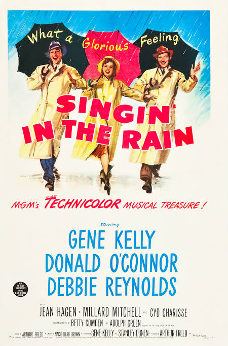

Musical é um gênero cinematográfico em que as músicas dos personagens estão entrelaçadas na narrativa, às vezes acompanhadas de canto e dança. As músicas geralmente avançam no enredo ou desenvolvem os personagens do filme, mas em alguns casos, elas servem apenas como quebras no enredo, muitas vezes como "números de produção" elaborados.
O filme musical foi um desenvolvimento natural do musical de palco após o surgimento da tecnologia de filmes sonoros. Normalmente, a maior diferença entre filmes e musicais de palco é o uso de cenários de fundo luxuosos e locais que seriam impraticáveis em um teatro. Os filmes musicais caracteristicamente contêm elementos que lembram o teatro; os artistas geralmente tratam seus números de música e dança como se um público ao vivo estivesse assistindo. De certa forma, o espectador se torna o público diegético, enquanto o artista olha diretamente para a câmera e se apresenta nela.
Abaixo é mostrada um poster de um clássico musical, Singing in The Rain. 
Para saber um pouco mais sobre o histórico de musicais, clique aqui!